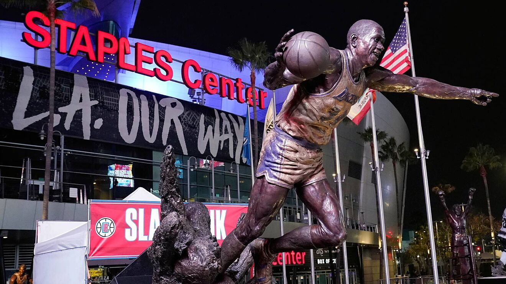

El STAPLES Center cambiará de nombre: detalles del Crypto.com Arena, el estadio de los Lakers y Clippers
A partir del 25 de diciembre de 2021, el STAPLES Center pasará a llamarse Crypto.com Arena después de un acuerdo de derechos de nombre por valor de más de 700 millones de dólares.
El estadio que ha recibido a Los Angeles Lakers y LA Clippers durante más de 20 años cambiará próximamente de nombre, pasando de ser el STAPLES Center al Crypto.com Arena, según múltiples reportes.
¿Cómo se llamará ahora el Staples Center?
Según Shams Charania (The Athletic), el STAPLES Center pasará a llamarse Crypto.com Arena a partir del 25 de diciembre de 2021.
Crypto.com, una empresa con cinco años de experiencia con más de 10 millones de usuarios y casi 3.000 empleados, es un agente importante en el emergente mundo de las criptomonedas.
El nuevo nombre, Crypto.com Arena, debutará cuando Los Angeles Lakers reciban a Brooklyn Nets en uno de los cinco partidos estrella de la NBA durante la jornada de Navidad. Se espera que el resto de la señalización del STAPLES Center sea reemplazada en junio de 2022.
Los detalles del cambio de nombre
Según el LA Times, Crypto.com pagó más de 700 millones de dólares por los derechos de denominación durante los próximos 20 años. La valoración del acuerdo lo convierte en uno de los más importantes en la historia del deporte profesional.
"En los próximos años, la gente recordará este momento como el momento en que las criptomonedas cruzaron el abismo hacia la corriente principal", dijo Kris Marszalek, director ejecutivo de Crypto.com al LA Times.
Según el LA Times, AEG, el propietario y operador del estadio, y Crypto.com todavía están trabajando en el alcance de la asociación más allá de los derechos de denominación, pero la integración de los pagos de criptomonedas dentro de la arena puede estar en el horizonte.
"Es una combinación perfecta cuando pensamos en el tipo de marcas con las que nos gusta asociarnos", dijo Dan Beckerman, director ejecutivo de AEG. "Crypto.com está buscando la plataforma de marca más exclusiva para hacer una declaración e impulsar la adopción, y estamos buscando una empresa innovadora y con visión de futuro que nos ayude a trazar un rumbo para el futuro completo de los eventos deportivos y de entretenimiento".
Historia del 'STAPLES Center'
El STAPLES Center ha sido el escenario local para Los Angeles Lakers y LA Clippers de la NBA, Los Angeles Sparks de la WNBA y LA Kings de la NHL.
Inaugurado el 17 de octubre de 1999, la entonces emergente STAPLES Inc. pagó 100 millones de dólares por los derechos durante 10 años. En 2009, STAPLES firmó un acuerdo por derechos de nombre a perpetuidad, sin embargo, en 2019, AEG recuperó los derechos de nombre por una suma no revelada.
Desde su apertura, el STAPLES Center ha albergado siete Finales de la NBA con los Lakers, las Finales de la Stanley Cup de 2012 y 2014, tres Finales de la WNBA y tres NBA All-Star Games (2004, 2011 y 2018).